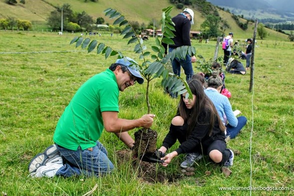

Avance de la deforestación en los cerros
Publicado el 30 de septiembre de 2025
La comunidad ha denunciado un aumento en la tala ilegal en zonas cercanas a la vereda Los Manzanos...


Reforestación en la Laguna de La Herrera
Publicado el 25 de septiembre de 2025
Voluntarios y estudiantes participaron en una jornada de siembra de 500 árboles nativos...


Contacto y Entidades Ambientales en Facatativá
Si deseas más información o unirte a actividades de protección ambiental, puedes contactar con las siguientes entidades:
- CAR Cundinamarca - Corporación Autónoma Regional: www.car.gov.co
- Secretaría de Medio Ambiente de Facatativá - Tel: (601) 890-1122
- Parque Arqueológico Piedras del Tunjo - Centro de cultura y protección ambiental
- Colectivos ambientales locales como Guardianes del Bosque y EcoFacatativá